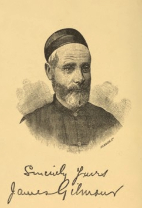

| 「モンゴル人の友となりて」 分冊６ | |
| 佐藤武久 | |
| (2016) | |
第14章 張家口、またはカルガン
地名の意義ー水蝕された卓上大地ー骨ばかりー絵のような岩石ー『天魚』ー丘腹にしがみついた家ー道の悪い人口ー城門で下馬する習慣ー張家口上保ー下保ー建設の余地に乏しいー落石ー闇黒の雷雨ー張家口はモンゴル人の大買い物市場ー漢人商人ー茶貿易ー平原の茶部落ーシベリアへ茶輸送ー移入品ー守備兵の屯営ー政府衛門ーアメリカ宣教師
張家口（カルガン）以外の漢人街を見ないで死ぬモンゴル人は多い。漢人はこれを張家口ーーーすなわち長一族の関門と称しているが、このを町は関門によって北方に通じ、をモンゴル人はこれによって万里の長城を越えて支那に入るので、通常ただ『関門』すなわち『ハルガ』と呼んでいる。カルガンという名称はロシア人によって広く外国に紹介されたのであって、彼らはこれに対応する支那語の名称よりも、短く発音しやすいので採用したのである。
草原より来る旅人はこの漢人市場に達するに先立って、一山脈を越えねばならぬが、その最も高い部分は海抜五千四百フィートも隆起しているという。この辺の道よりする眺望は壮大を極め一望はるかに重畳する山嶺と涸渇した河床の大パノラマを抱擁し、内にまた水流の絶えざる河川が一条光り輝きつつ遠く四方に伸びているが、極めて幅狭く見える。実際の流水はいかなる場合でもを広い不毛の石礫帯の極く小部分を占めているに過ぎず、河流れはこの範囲内で彼方此方に転々するのである。
張家口上の峠に立てば、近景は水の浸食作用を受けつつある高いテーブル状台地の縁辺が長く連れるのみである。この光景は一見雄大にして心打たれるが、仔細に吟味すると、全景を通じてほとんど単一であること、はるか彼方の広い河床や足下に迫る大渓谷は、眼前の小流と先ごろの雨で道端に掘られた小溝が大規模になったにすぎぬ事に気がつく。この侵食の過程は進行しつつあるうちに、突然高原縁辺をなす大岩石の要塞に遮られたのである。
峠の頂に立って望めば、想像力の乏しいものでも、眼前足下に広がる大平地が以前はテーブル状の高台であったこと、年々夏の増水の撓まぬエネルギーがこれを構成する砂礫や黄土を洗い去り、山には水の作用に抗しうる固い土質だけ残った事を知るであろう。
大渓谷は平原より延々と伸び、現存するテーブル状台地の縁辺に達し、その河道は流れを阻む岩石を避けてうねっている。これらの大渓谷から幾多の河谷が分かれて出て、さらにこれよりおびただしい枝葉が分かれ、無数の網となって分岐している。その全体の組織はあたかも樹木の幹・大枝・中枝・小枝を彷仏とさせる。急速無碍の大分壊期は遥か昔に過ぎて、今なお進化過程を行われつつあるも、
おそらく過去に現出したものと比べれば小規模であるに違いない。今日においては水流は岩石屑の土壌や砂礫を大部分洗い去り、ーーーいわば骸骨だけを残したのだ。されど、家郷より張家口に赴くモンゴル人は、風景を眺めたり、さては地表の変化に関する地質理論に我を忘れたりして時間をつぶすことはない。鞍上より降りて引き馬しつつ、気を配りながら急な坂を下り、谷底に達すると鞍を締め直し、いっぷく吸い付け、煙管を長靴に差し込むとやおら再び馬上、張家口に達する石の多い河床を下って行く。
 （煙管と煙草入れ）
（煙管と煙草入れ）
谷はあるいは広くあるいは狭く、河辺の大部分は懸崖が迫っており、なかには高さ数百フィートに及ぶものもある。渓谷のやや開けたところ、丘腹に二、三の村落がしがみついているが、家屋は単に絶壁に洞窟を掘り、ただ正面に戸口や窓をつけたのが多い。土壌が洗い流されたため、ところどころ勢いに任せて岩石突き出して奇観を呈している。そのうち、ちょうど酒杯のつまみに似た形のものについて、モンゴル人はとある伝説上の英雄が馬をつないだ岩だと称し、これから張家口に至るこの街道を『つまみ峠（HandlePass）』と呼んでいる。
雨季増水のころを除いて、この渓谷にはほとんど水がない。河道の半ば干上がっていて、四季を通じて水のある川流は極めて少なるため、時として石礫の下に隠れ、遥か下流に至って地表に現れる。氾濫ーーーおそらく年に一両度で極めて稀であるがーーーの生じたときは、岸より岸に至る広い河床に、漫々たる水をたたえ、当たるを幸い洗い去って、逆落としの河道に数千トンの砂礫を押し流す。巌を打つその力の激しいこと、高さ数フィートのところに新しい傷跡を残すほどである。
珍しいことには、この渓谷が増水すると、必ずその後に小魚が現れるが、河水が澄んで普通の水準に復すると見受けられる。支那人は鉢を手にして来たり、観賞用に自分の店に捕獲して帰る。これを『天魚』と呼んでいる。非常に微細な生物で、一体どこから出てくるかが問題である。氾濫の最中に河の中に現れるとは考えられない。激しい流れや砂礫がぶつかって粉々に砕いてしまうであろうから、どうしてもそのあとに現れるに違いない。しかしどこからだろう？ またなぜ氾濫後でなければ現れないのだろうか？ その巣がどこか地底の洞窟の中にあって、増水によって水が溢れ出る時だけそこから外に出られるのであろうか？
北方から『つまみ峠』を出て下る羊腸たる河床を行く旅人は、十マイルか十二マイル張家口を見ずして進むが、やがて角を曲がると、渓谷の奥まった狭いところに、あまたの住家が群れ集まっているの認めるが、なかには丘腹の天然の壇を利用し、もしくは人工的にこれを築いて、その上に鳥がとまっているようなのもある。ここは張家口の西北郊と称すべく、ロシア人が茶貿易を行っているのもこの地である。旅人はここから張家口の城内まで、堅固な石堤で河を防ぎ、背後の険しい丘陵の下に押さえつけられたような、目白押しに立ち並ぶ二列の商店の間を過ぎる。ちょうど狭い道を行列が通る場合に、これに道を開けて、見物人が壁際まで押し詰められたという格好である。河床より張家口に入る大道は、非常に高く急な堤防を乗り越えるので、荷物を積んだ車などは昇り降りにすこぶる困難である。時々昇りを楽にするために砂礫を盛ることもあるが、この所道普請をすることは誰の義務でもないらしい。絶え間のない車馬や河の増水のために、仮の踏み台も崩れたり流されたりして、堤防に荷物を引き上げる牛馬の苦闘は正視するに忍びない。旅人がこの地点にかかると、大抵の場合には、立ち往生組に出会う。急坂を這い上がろうと何遍か努力しては失敗しているが、こうした車馬止めは河の中に無数の車群を混雑させるばかりでなく、城門に至る狭い道を塞いでしまって、騎馬の人すら通行困難ならしめる。城門のところではまた、城内収税に車馬の往来を監視する役人や下廻りりに対し、おそらく敬意を表し、ご機嫌を伺うためか騎乗のものは降り立つのが習慣のようである。
張家口は上下の両堡に分かれているが、上堡は繁忙な混雑したところで、街路は車馬の往来にさして広からず、大きな石材をもって舗装されている。これらの石も最初敷かれた当時はもちろん平滑で、良好な道路をなしたに違いないが、長年の間に磨損して壊れてしまった。深い溝に掘れた部分もあるし、ほとんど無くなったところもある。一年を通じて日夜この恐るべき街路には、賃貸にしたり、旅客を運び、商品を輸送する車の跡をたたないが、しかし車輪はあまり傷んでいないらしいのを見ると、漢人の車輪製造者の腕の冴えを示すこれより大きい証拠は無い。
天気でも悪かろうものなら、敷き石道の大部分は黒泥膝を没するがごとく、車馬の苦闘する毎に小高い側道を行く徒歩の通行人にしこたま泥濘をはね上げる。この難路は、モンゴルから長列をなして入り来る曹達輸送車の木軸にとって、特に致命的で、深い孔に陥った衝動で破損した荷車をじっと見入っている男など、張家口では日常見かける光景である。
張家口の背後には覆い被さるように山勢が迫っているが、その低めのものに登れば、河岸に座って堤防を築く人の群れを見ながら、『張家口は場所が悪い。ちょうど水の真ん中にある』と言うモンゴル人の言葉の、必ずしも見当はずれでないことを、旅人は知るであろう。
主流に沿って、一、二マイル下れば下堡にいたり、上下両堡の中間には政府衛門や満州守備兵の矩形の兵営が位する。上下二堡の真ん中あたり、危ないくらい兵営と接近してさらに大きな河床があり、その氾濫の恐ろしさは、この猛威を阻止し河道を導くための無数の堤防の築かれていることから、十分に察することができる。
周囲の河水が危険なため、張家口では建築に適当な土地を求めることが困難であるが、特に上堡には警戒すべきもう一つの危険、すなわち山嶺の危険がある。一方に河を画しているので、家屋の町の他端を画する峻嶺のふもとに隙間なく建てられている。したがって覆い被さる懸崖上から、霜や雨で緩んだ岩塊が丘腹より転落して、下方の家屋を 圧し潰しはしまいかと少なからざる危険を感じる。ある夏の夜、床についた人々は丘陵の方面に雪崩の落ちるような物音を聞いたが、翌朝明るくなって見ると、絶壁の遥か上から岩石がなだれ落ちていたということもある。石はほとんど大きいものばかりであった。なかんずく、台のような格好したものは一際巨大で、厚さ九フィート、直径十二フィートのマセキ磨石がちょうど彫り取れるくらい、これが最も遠くまで跳ね飛んでいて、たまたま流水に掘られた溝に落ちて、根の生えたように食い込んでいた。この落石がここで阻まれなかったら、おそらく一支那商店の納屋の屋根をぶちぬい抜いて落下したことであろう。しばらく以前、ある宣教師が問題の場所を買うか借りようとして、不調に終わった、という話があった。しかしこの石を見、またいざというとき逃れることも困難なので、その支那人は考え直して、数日後右の外国人にお望みなら譲ろうと言いやったそうだ。
場所によって家屋があまりに山麓に密接しているため、これに登る際、足で石を蹴り落として人命や家屋に危険を及ぼさないよう注意を要するほどである。
この辺にある家屋はほとんど極貧階級のものであるが、富裕な商人の店舗も、大通りに面していても、氾濫の危険なしとは考えていない。観察の細かい旅行者は、到着早々商業区域に正面入口の片側に、溝の彫れた石材や木材を見つけて奇妙に思うであろう。内部にはまた常に一揃いの厚板の準備されたところがあって、危険な氾濫の勃発するや直ちに厚板を持ち出して溝にはめ込み、洪水に対する防壁を作り、あふれてくる水を河道に押し戻すのである。私の最も気味悪かった張家口の思い出の一つだが、ある夏の夕方、長い街路の端から端まで一軒の宿屋を訪ねに赴いた。訪問に出かけると雷雨に出会って、増水した黄色の河流を徒歩で渡ったり、渡してもらったりした。陽光は、すごい勢いで山頂に集まる真っ黒な密雲に閉ざされて、もう暗くなっている。着き遅れた通行人は、流れの側に立つていて数文で客を渡す裸足の男の背にしがみついて、一刻も早く家路につこうと急いでおり、道には至る所、夜分の増水を恐れて水よけの板を打ち込む店員の騒ぎでごった返していた。一、二年前にも氾濫があって、暴風と闇黒の恐怖裡に、戦慄する数十名の人々のみ呑み去った記憶があることとて、気味悪さはいっそうであった。モンゴル人の多数にとって、張家口が重要なのは、彼らの文化程度から生ずるあらゆる需要を満たしうる大市場だからである。あらゆる種類の穀粉食糧・内外の綿織り物・支那絹やロシア毛織物・その他の一切の馬具・陶器や銅鉄器、あるいはまた針・ボタン・馬頭琴の弦・硫黄マッチ等々の無数の日用品、こうしたものはモンゴル人がいずれも張家口で買い入れるものであり、またこの地が品質も良く低廉であるとされている。なかには品物を積んで帰る荷車をひいて来る者もあるが、多くのものは買い物を革袋に入れ、これを鞍に振り分けにひっかけ、家路をたどる。乗り手は馬の運ぶべき荷物のほんの一部をなすだけだ。
されど漢人は単に顧客の店舗を訪れるのを待ってこれに供給するのみでなく、行商を送ってあまねくモンゴルを跋渉せしめ、この他張家口で牛車いっぱいの商品を仕入れ、営々として峠を越えて引き廻り、テントからテントへ転々品物を捌いては主に物々交換で、品物で支払いを受けて生活する多数小商人がある。その範囲内に住むモンゴル人の家庭需要を、こんな風に充すのも商売として決して小規模のものでないが、それは結局張家口で行われる取引の一部にすぎないのである。
張家口の貿易は茶の貿易である。茶はモンゴルにおいては贅沢品ではなく、生活必需品と目せられ、消費量も夥しい。かつ広大なモンゴル地域に用いられるこの商品はすべて張家口を経て入り来るのであって、南方より海路天津へ、天津より漢人の川船で通州へ、通州より驢馬・騾馬あるいは駱駝の背によって張家口に運ばれる。張家口からモンゴル全域に配給される。例えば駱駝の隊商や長蛇の如き牛車で庫倫等の商業中心地に輸送される。モンゴル人はモンゴル各地より、駄獣をもって輸送業務に蝟集する。
モンゴルで使用されるものの他、キャフタを経てシベリアおよびロシアに入る茶も、ことごとく張家口を経由する。この貿易の一部はロシア人自ら手中に収め、常に張家口に代理業者を置き、南方から来る茶を受け取り、これを北方に送っている。これら代理業者は張家口城外に住んでいるが、それの居住するところは山峡中にあって余地がないため、茶の大部分は峠を越えて搬出し、平原中に貯蔵しておく。下に木を並べて、泥土に汚れたり、湿気を帯びることのないようにし、函はは山と積み重ね、注意してアンペラをもって覆うが、二、三枚も重ねれば防水として充分役に立つ。
時にはこうして輸送を待って貯蔵されるものがきわめて多量に上り、遠方から望めば、ちょうど大通りや路地のある村落のように見える。茶の量が普通より大変に多いとか、急速に輸送せねばならぬとか言う場合は、輸送の料金も騰貴する。最近あるシーズンのことだが、輸送を待つ箱の数が極めて多かったため、数ヶ月というもの牛や車がほとんど通常の二倍の価格をもって取引されたことがある。
このように牛車で送られる茶は大部分北モンゴルやシベリアでしょうし消費される粗末なち団茶であって、ロシアで用いるん細葉茶の陸路輸送されるものは、通常沙漠をよぎり駱駝の背によって送られる。
張家口においてモンゴルより来る移入品の主なるものは塩である。またソーダは張家口に極めて規模の大きい精製工場工場があり、互いに小綺麗な大きなブロックの壁の前に積んだ石炭の山を競うものの如く、正門を通る誰にも見えるように広庭の一部に示している。皮革や毛皮については、張家口は河流であるので加工は特に便利であるし、また主として砂漠を越えて庫倫より来る材木は、茶を持って北方に赴く荷車の大部分の帰り荷をなす。
張家口七万五千の人口には一部満州守備兵を含み、彼らは妻子と共に家屋の立ち並ぶ数カ所の兵営に住んでいる。各兵営は土壁に囲まれ、建物が極めて規則正しく、またいずれも同様なので、地方民の居住地と区別できる。また町の威容は政府衛門の存在によって一段と重々しい。ここでは南モンゴルの大部分に亙る政務を執り行う。街上に見受ける少なからざる上流階級のモンゴル人は、公務上の事柄や、あるいは隣人との間に係る公事を上級裁判所に提訴するためにこの地に来ているのだ。
張家口には1865年以来、アメリカ外国伝道会の基地の一つとなっており、伝道会員はその注意を城内に限ることなく、周囲の地方にも福音を弘めんと努め、モンゴル平原の手近な地方もその活動範囲に含めている。
(EOF)
編集者のまえがき
この電子籍は「蒙古人の友となりて」（ジェームズ・ギルモア 著 (1883.05) 後藤冨男訳 (1939.09.06)）を分冊化し、第12章、第13章と第14章を分冊6として電子書籍化したものです。電子化にあたり「蒙古」を「モンゴル」に、「喇嘛」を「ラマ」に、「パオ（包）」を「ゲル」に置き換えるなど旧仮名使いや古い言い回しの一部を改訳しております。
なお、1883年5月ロンドンで公刊された英文の原書「Among the Mongols」の無料のeBookが次のサイトで入手でき、iBooksで閲覧できます。
https://archive.org/details/amongmongols00gilm
さらに、もう一つの著作も下記サイトで入手できます。
「JAMES GILMOUR OF MONGOLIA HIS DIARIES LETTERS AND REPORTS」
総目次
「モンゴル人の友となりて」分冊６
ジェームズ・ギルモア 著 (1883.05)
後藤冨男 訳 (1939.09.06)
佐藤武久 編集・電子化（2016.1.5)
（原書の表紙）

（ギルモアの肖像）

第12章 庫倫（クーロン）、フレー、またはウルガ
 （編集者により追加された参考地図）
（編集者により追加された参考地図）